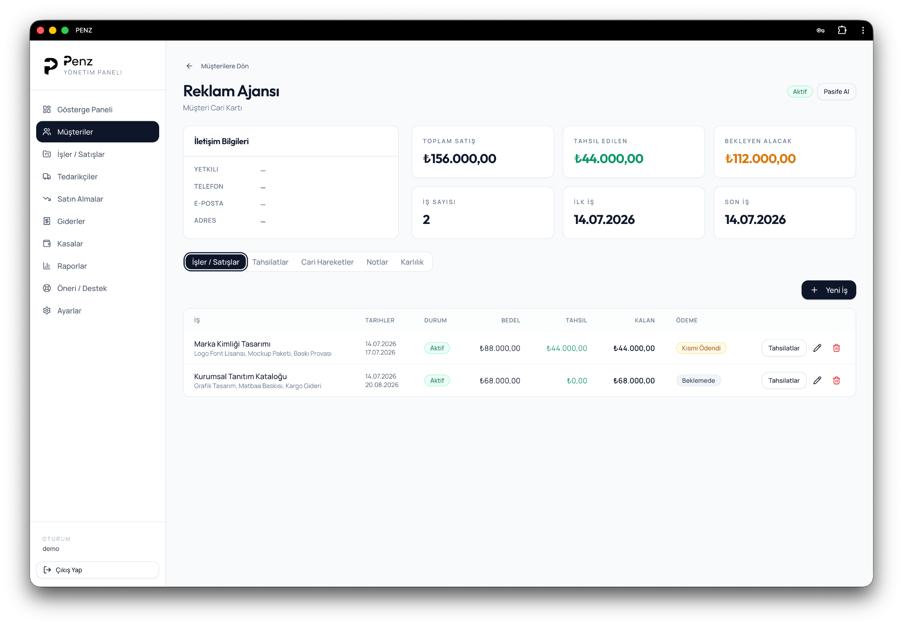
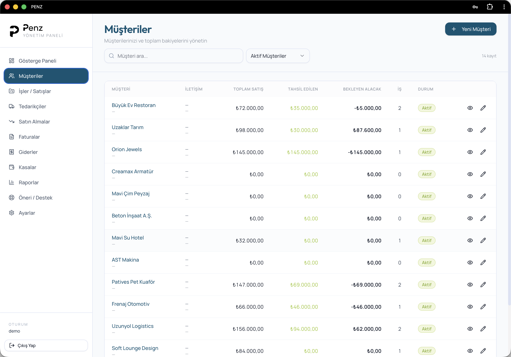
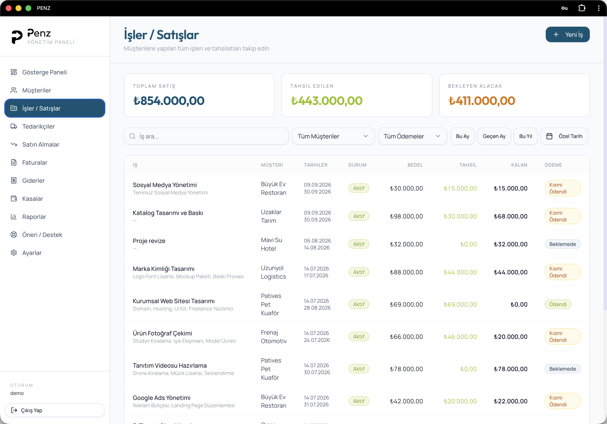
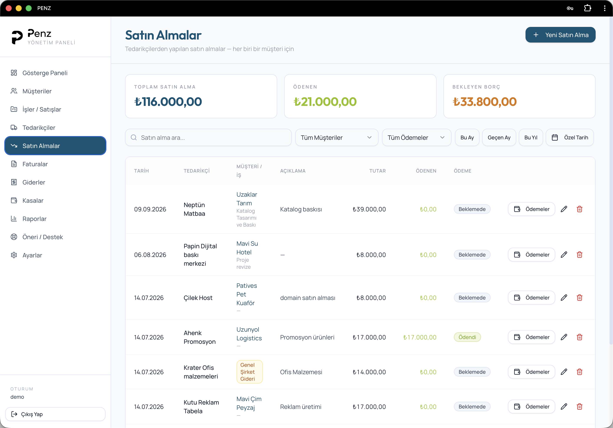
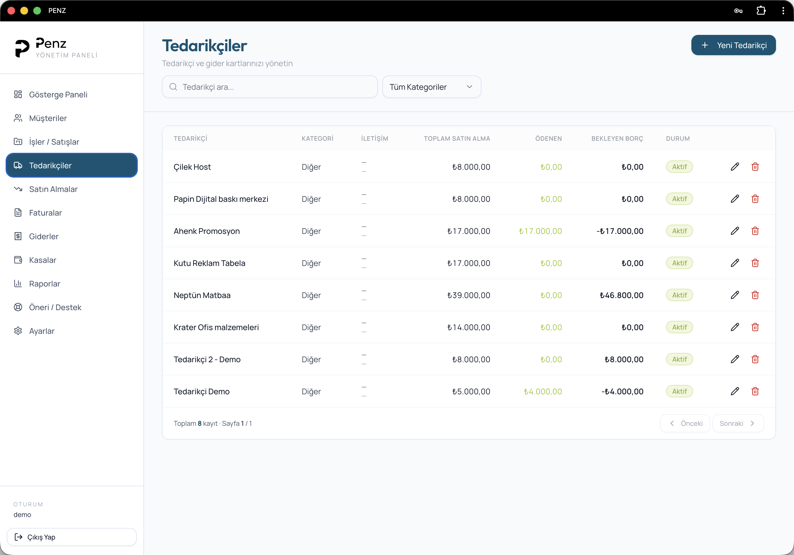
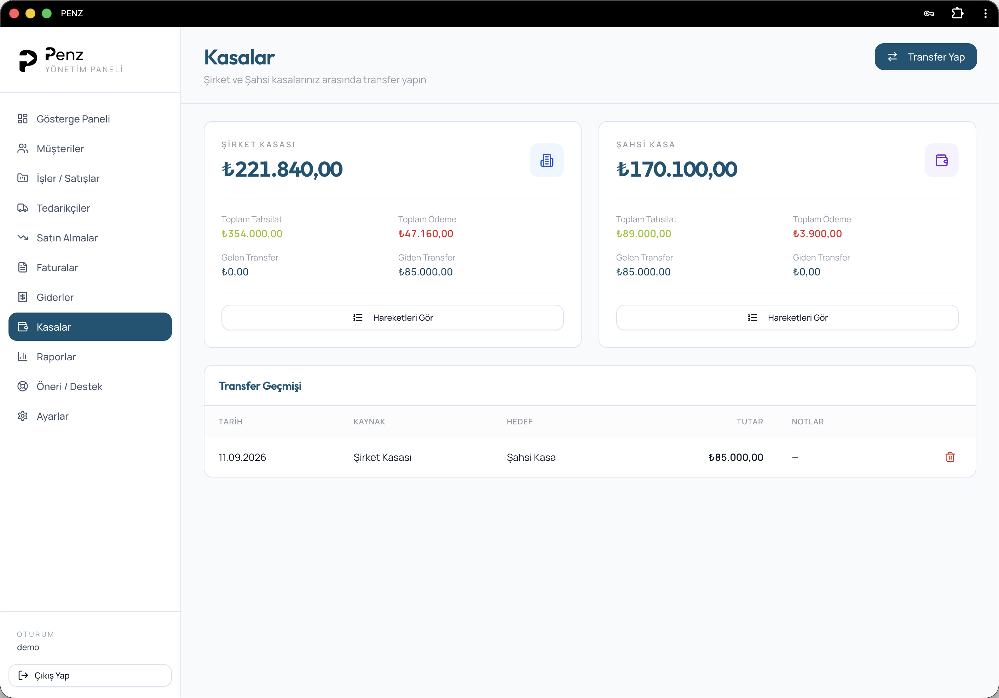
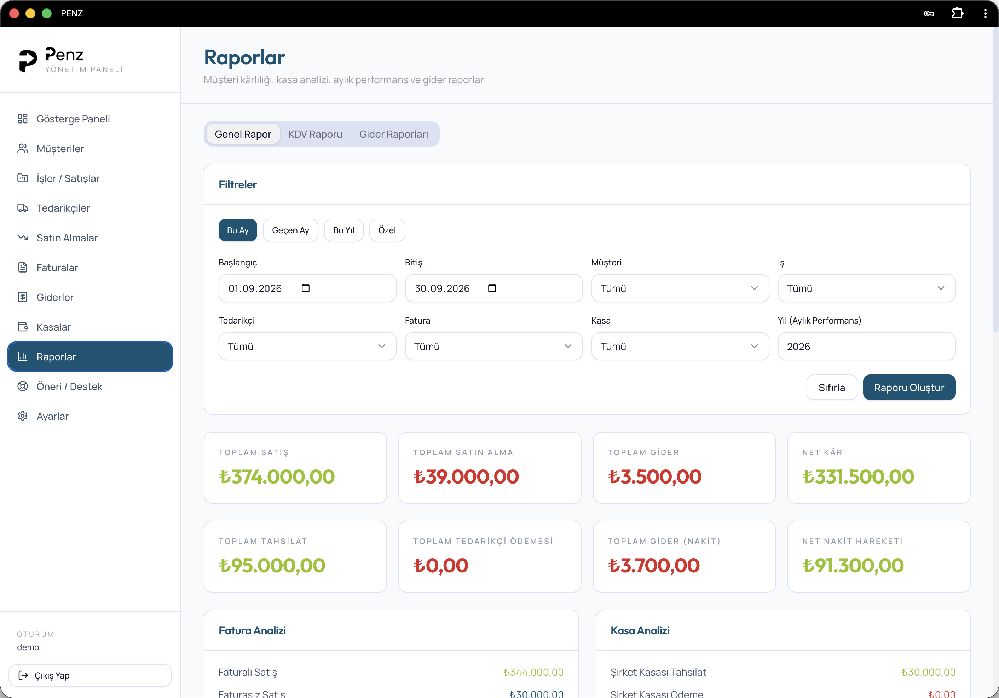

Bir müşteriye ait her şey.
Tek ekranda.
Satışlarınızı, tahsilatlarınızı, cari hareketlerinizi ve gerçek kârlılığınızı tek bir müşteri kartında yönetin.

Müşterinizi değil, onunla olan ticari ilişkinizi yönetin.
Her müşterinin toplam satışını, tahsil edilen tutarını, bekleyen alacağını ve yaptığı işlerin tamamını tek yerde görün.
Bir bakışta kim ne kadar borçlu?
Müşteri listeniz yalnızca isimlerden oluşmaz. Her müşterinin finansal durumunu aynı satırda görürsünüz.

Her işinizin finansal durumunu tek ekranda takip edin.
İşin bedelini, ne kadar tahsil edildiğini, kalan tutarı ve ödeme durumunu aynı satırda görün.

Her maliyetin hangi işe ait olduğunu bilin.
Tedarikçiden yaptığınız satın almayı ilgili müşteri ve işle eşleştirin. Böylece yalnızca ne kadar harcadığınızı değil, o müşteriden gerçekte ne kadar kazandığınızı görün.
Satın almayı doğrudan müşteri ve işle ilişkilendirin.
Bir satın alma kaydı oluştururken hangi müşteri ve hangi iş için yapıldığını seçebilirsiniz. Penz bu maliyeti doğru müşteri ve işe bağlar; kârlılık hesabı da buna göre oluşur.

Tedarikçi kartında borcunuzu ve satın alma geçmişinizi görün.
Toplam satın alma, toplam ödeme, bekleyen borç ve işlem geçmişi tek yerde kalır. Böylece müşteri tarafındaki alacaklar kadar tedarikçi tarafındaki yükümlülükleri de aynı sistem içinde yönetirsiniz.

Şirket ve şahsi kasanızı birbirine karıştırmayın.
İki kasayı ayrı izleyin, tahsilat ve ödemeleri takip edin, gerektiğinde kasalar arasında transfer yapın.

Cironu değil, gerçek kârını gör.
Tarih, müşteri, iş, tedarikçi ve kasa filtreleriyle istediğiniz dönemin finansal tablosunu saniyeler içinde çıkarın.

Tüm süreç birbirine bağlı çalışır.
Müşteriden işe, tahsilattan tedarikçiye, kasadan rapora kadar her adım aynı sistemin parçasıdır.
Müşterini oluştur
İş yaptığın müşteriyi ve temel bilgilerini kaydet.
İşi / satışı oluştur
Bedeli, işi ve ödeme planını tek kayıtta tut.
Gelir ve gideri işle
Tahsilatları, satın almaları ve giderleri bağla.
Gerçek kârı gör
Müşteri ve iş bazında finansal sonucu netleştir.
Hepsinin sonucu tek ekranda.
Satış, tahsilat, bekleyen alacak, satın alma, borç ve net kâr. Günün finansal durumunu uygulamayı açar açmaz görün.

Penz'i kendi işlerinizle deneyin.
7 gün boyunca müşterilerinizi, işlerinizi ve finansal sürecinizi gerçek verilerinizle yönetin. Kredi kartı gerekmez.